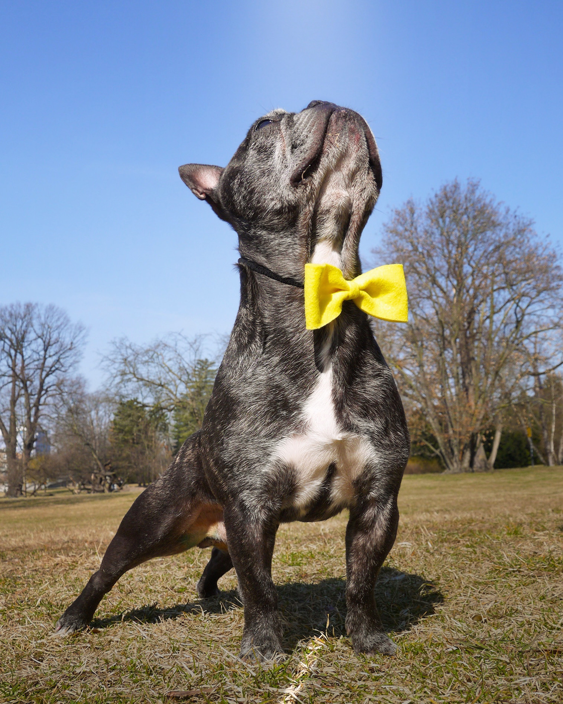

Žlutá stužka
Co znamená a jak se chovat k pejskovi, který ji nosí.
Žlutá stužka, vestička či páska na vodítku, nová psí móda, nebo naznačující signál pro ostatní pejskaře? V dnešní době máme velkou škálu psích doplňků, ať už to jsou šátečky, motýlci, nebo třeba kšiltovky. Pokud jsou ovšem v žluté barvě, tak v nich je většinou skrytý význam. A to „potřebuji prostor“! Slyšeli jste už o tom? Pokud ne, tak dávejte velký pozor a pejskům s tímto označením se obloukem vyhněte. V žádném případě k němu nepouštějte svého psa, dítě, ani zvědavou tchýni, která ho chce „jen“ pohladit.
Zde máte pár důvodů proč NE:
- Bázlivý pes – tento pes může mít strach z pro nás naprosto „normálních“ věcí. Ať už je to muž v černém kabátu, stará babička s francouzskými holemi nebo malý chlapec s balónkem. Nikdy nemůžeme na 100 % vědět, čeho se cizí pes děsí a kdy tomu tak je. Proto je potřeba dát mu prostor!
- Nemocný pes – i pejsci, kteří jsou například po náročné operaci, začnou chodit dřív či později na krátké zdravotní procházky. Takový marod však opravdu není zvědavý na vašeho Punťu, který se na něj s radostí rozběhne a začne mu skákat na záda. V tomto případě to může být pro daného psa i velmi nebezpečné. Proto je potřeba dát mu prostor!
- Nekontaktní či nesocializovaný pes – tito pejsci mají velmi často problémy sami se sebou, aby zvládali všechny vjemy, které na ně působí, když jsou venku na procházce. Například v parku. Z jedné strany slyší štěkot zlatého retrívra na svou paničku, který se dožaduje míčku. Z druhé strany na sebe doráží dva malí kříženci, běhající z jedné strany parku na druhou. Zároveň v tu chvíli, pár desítek metrů před psem, na dětském hřišti spadla malá holčička z houpačky a brečí. Co myslíte, že se stane v tuto chvíli, když na psa zezadu vyběhne úplně cizí pes, kterého nestačil ani pořádně zaregistrovat? No… nedopadne to dobře. Tito pejsci se potřebují teprve naučit, jak se seznamovat a to v klidu, tak, aby obě dvě psí strany byly na vodítku a za vědomého vedení jejich páníčků. Proto je potřeba dát jim prostor!
- Hendikepovaný či starý pes – omezený pes, ať už z důvodu postižení či stáří, má zpravidla rád „svůj klid“. Může se jednat i o slepého či hluchého psíka, což často na první pohled není poznatelné. Pokud se takovýto pes vyleká, tak se pravděpodobně ožene, nebo se bude snažit utéct. V každém případě bude velmi daleko za svou komfortní zónou. A ruku na srdce, opravdu toto chceme dělat bytostem, které už tak mají nějaké to trápení za sebou? Proto je potřeba dát jim prostor!
- Hárající feny – každý pejskař, který doma nemá kastrované jedince, to moc dobře zná. Buď je majitelem fenky, která je v tuto dobu často velmi náladová, nebo má doma psa, který už týden pokňourává a nespí, protože fenka od sousedů hárá. Jelikož není možné na měsíc fenku zavřít jen doma a čekat „než to přejde“, tak dost pravděpodobně budete venku hárající feny potkávat. Za předpokladu, že by fenka zrovna neměla špatnou náladu a vašeho psa nesežrala hned na potkání, tak nikdy nemáte jistotu, že její páníček bude nadšen ze psa, který mu bude chtít nakrýt jeho výstavní šampionku. Proto je potřeba dát ji prostor!

Držme se tedy prosím těchto pravidel:
- pokud zahlédneme psa se žlutým označením, tak si svého připneme ihned na vodítko (pokud jej máme na volno),
- psa si přiřadíme/přitáhneme k noze a buď zastavíme a necháme psa/fenu projít, nebo je budeme míjet v co největší vzdálenosti (v ideálním případě min. 2 metry),
- buďme ohleduplní, nikdy nevíme, kdy tento prostor bude potřebovat náš pes,
- na označeného psa nemluvíme, nesaháme, ani na něj upřeně nehledíme.